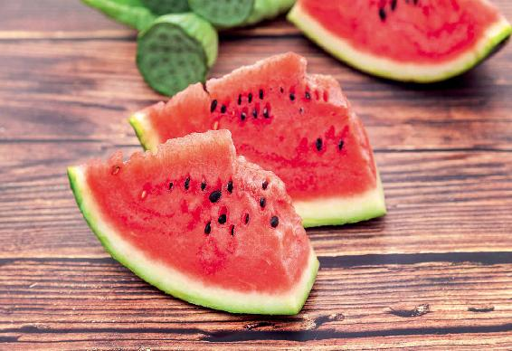

在一年的四个“立”的节气中，立秋是最特殊的一个。因为立秋代表着秋天的开始，但是并不意味着夏天的终止。
在立秋之后，还要经过一个长夏，这是夏天的一个“尾巴”，它要一直持续到三伏天之后的一段时间（这个时间段基本上是在8月份）才会结束。
人们不禁会问，这段时间我们到底是按夏天还是秋天的活法来过呢？
其实，这个时间段是有一点特殊性的，所以两个季节都是要兼顾的。
首先，我们要继续且加强盛夏时节的健脾祛湿工作；其次，我们又要按初秋的方法来养生，不能再像夏天那样贪凉了。因为不管我们把这段时间称为长夏还是初秋，它都跟盛夏时节不一样——天地之气已经转换了。
立秋节气之后，即便白天的气温再高，一到夜里也会有一点凉意，通常会有一点风，而且跟夏天的热风不一样，是带着一丝丝凉意的，这就是立秋给我们的信号。所以立秋节气的第一候就是“凉风至”。秋天一到，凉风乍起，这是天地之间的阳气在慢慢收敛的表现，阴气也慢慢地要出来了，因此从立秋开始，早晚的温差会慢慢地变大。
当然，这种“凉风起”的感觉，并不是所有人都能感觉得到的。如果您从有空调的房间出来，那是感觉不到这种早晚的凉意的，反而会觉得外面依然热浪袭人。
事实上，空调环境与室外的温差比起立秋时早晚的温差要大多了，所以很多朋友感觉立秋时的气温跟夏天的气温是一样的。
允斌解惑：顺时粥加黄芪,可以吃到长夏结束
羊咩咩：顺时粥加黄芪可以吃到长夏结束吗？
允斌：可以，这样效果更好。
什么叫秋行夏令？立秋后还习惯延续着夏天的活法，喝冷饮，吹空调，吃冰镇过的西瓜，等等，这种活法就叫作秋行夏令。
这样做的后果，就是等到九十月，天气渐渐转凉的时候，身体的一些毛病就会发出来了。有人会拉肚子、咳嗽，或者身体发胖，还有一些人会感觉到秋乏……
每年过了立秋，气温虽然不会马上降下来，还会维持一段时间的高温天气，这时候我还是会把凉席给撤掉。因为到了立秋的时候，晚上睡觉就不能再在凉席上睡了，以防后背受凉。
如果您是中老年人，身体不是非常壮实的那种，到了立秋最好不要再睡凉席，晚上也不要开空调。
到了立秋，晚上的温度已没有盛夏那么热了。即便是南方，半夜的气温也不会让人热得浑身流汗，睡不着觉了。
如果立秋时节您在夜里还是会觉得身体一阵阵燥热，这多半就跟温度没有关系了，而是身体阴虚导致的。
如果有这种症状，那您就要注意滋养心阴了。在立秋时节，您可以通过喝一些酸梅汤、吃一些桑葚膏来滋养。
立秋之后最好是少给孩子喝冷的饮料，吃冰的东西，因为小孩子如果在立秋的时候吃了生冷的东西，很容易造成秋天、冬天的咳嗽。《黄帝内经》记载：“秋伤于湿，冬必咳嗽。”这个湿不光指外界的湿气，也包括吃进身体里的寒湿，而寒凉的食物是最容易让身体产生寒湿的。
秋不食瓜中的“瓜”指的是西瓜，它是夏天的水果，能帮助我们解暑和清心火。如果立秋以后，我们再大量、经常地吃西瓜，特别是吃刚从冰箱取出来的西瓜是很伤脾的，很容易引起脾湿，导致腹泻，而且一直都断不了根，还有一些朋友会腹部发胖。

此时要吃应季的水果。
西瓜已经不应季了。那什么是应季的水果呢？
现在很多朋友都分不清楚到底什么水果应季，什么不应季。如果我们想找秋天应季的水果，一个很简易的鉴别点就是味道。秋天应季的水果多半是带有酸味的，如桃子、葡萄等，吃它们可以护肝凉血。
减凉增热，“凉”就是凉菜，“热”就是热菜。
立秋后就不能再多吃凉菜了，而是要多吃一些炒菜，因为吃炒菜可以摄取更多的油和蛋白质。
立秋后，饮食中的油和蛋白质的比例都要适当地增加，不能再像夏天那样清淡了。
北方人讲究在立秋这一天贴秋膘，其实就是这个意思。要为自己的身体储备一点能量，补一补夏天的虚，同时也为即将到来的秋冬做一点准备工作。